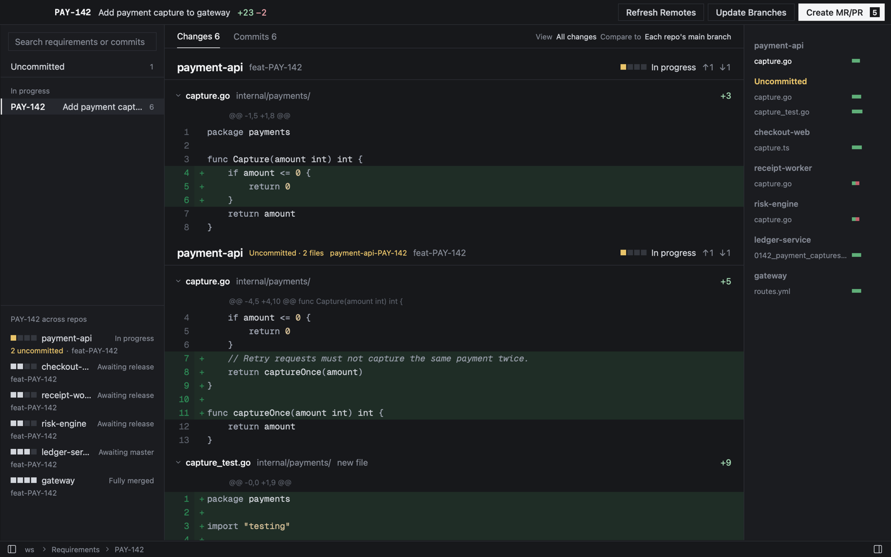
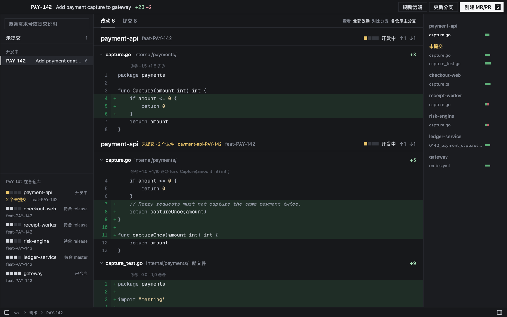

One requirement,
many repositories,
one diff.
一个需求，
多个仓库，
一份改动。
A requirement like PAY-142 often touches six repositories at once. Type the number, and every repository's changes appear in one place, with how far each has merged.
一个需求（比如 PAY-142）常常同时改了六个仓库。输入需求号，所有仓库的改动集中到一处，各自合到哪一步也一目了然。


A live demo with made-up data: switch requirements, change the view, fold files, open a commit, and try the three batch buttons. 用虚构数据做的可交互演示：切换需求、换「查看」、折叠文件、打开提交，三个批量按钮也能点。
How it works怎么用
-
Open the folder打开文件夹
Point Sheaf at the folder that holds your repositories. It finds every repository and worktree inside.选中放仓库的文件夹，Sheaf 找出里面所有的仓库和工作目录。
-
Follow a requirement关注一个需求
Type a requirement number and Follow it. Sheaf finds every branch whose name contains it.输入需求号，点「关注」。Sheaf 找出分支名里带这个号的所有分支。
-
Read看
Every change, repository by repository, including what is not committed yet.全部改动按仓库依次排开，连还没提交的也在里面。
The only convention: put the requirement number in the branch name, like feat-PAY-142, and start commit subjects with it. Nothing to install in your repositories, no account.
唯一的约定：分支名里带需求号，比如 feat-PAY-142，提交标题也以它开头。不用在仓库里装任何东西，不用注册。
Built for reviewing agent-written code为把关 Agent 写的代码而做
Review at any stage什么时候都能审
Before commit, before merge, or after release: it is always the same question — what does this requirement bring to master.没提交、合 master 前、发布后，看的都是同一件事：这个需求给 master 带来什么改动。
Find it again after release发布后还能回溯
Go back to a requirement's changes by its number, even after the branches are gone.按需求号回到当时的改动，分支删了也一样。
Batch actions, planned first批量操作，先列计划
Refresh remotes, fast-forward favourite branches and create GitLab MRs or GitHub PRs across every repository, after showing you what will happen.刷新远端、快进收藏分支、创建 GitLab MR 或 GitHub PR，一次作用到所有仓库，执行前先列出要做的事。
Safe by design安全为先
Never commits, rebases, force-pushes or stashes, and leaves folders with uncommitted changes alone. Every write is in the activity log.从不提交、变基、强推或 stash，不碰有未提交改动的目录。每条写操作都记在活动日志里。
Using a coding agent? Send it the commit convention and it sets the workspace up itself. 用 Coding Agent 写代码？把提交约定发给它，它会自己配置到工作区。
Command line, for you and your agent命令行：给你，也给你的 Agent
The app's bundled sheaf command answers the same questions without opening the app: which requirements are in flight, what each repository still lacks, and what has not been committed yet. It never writes to your repositories, and stays read-only while the app is open.应用内置的 sheaf 命令不用打开应用，也能回答同样的问题：哪些需求在进行、各仓库还差什么、哪些改动还没提交。它从不写你的仓库，应用开着时只读。
# tracked requirements and their gaps关注中的需求和它们的缺口
sheaf status
# one requirement across repositories; --files lists uncommitted files一个需求在各仓库的情况；--files 列出未提交的文件
sheaf show PAY-142 --files
# has everything merged through the flow? exit code says是否已按流程全部合入？看退出码
sheaf check PAY-142
# commits with full messages, paged分页列出提交及完整说明
sheaf commits PAY-142 --jsonMade for agents为 Agent 而做
Every command takes --json with a versioned contract, stable problem codes and exit codes. sheaf help json documents each field, so an agent can review a requirement from the help alone.每条命令都支持 --json，有带版本的结构、稳定的问题码和退出码。sheaf help json 写清每个字段，Agent 只看帮助就能审一个需求。
Shares the app's data和应用共用数据
Uses the same workspaces and settings in ~/.sheaf, and reuses the app's index, so most queries return in about a second. Tab completion for zsh and bash.和应用共用 ~/.sheaf 里的工作区和设置，复用应用的索引，多数查询一秒左右返回。支持 zsh 和 bash 的 Tab 补全。
In the app, choose Sheaf → Settings → General → Install, then run sheaf --help in a new terminal. The command and zsh completion link into the app, so updating the app updates both. Remove them with Sheaf → Settings → General → Uninstall. Bash users add eval "$(sheaf completion bash)" to ~/.bashrc.在应用中选择 Sheaf → 设置 → 通用 → 安装，然后在新终端中运行 sheaf --help。命令与 zsh 补全一起链接到应用内，更新应用时两者也会更新。选择 Sheaf → 设置 → 通用 → 卸载 即可移除。bash 用户在 ~/.bashrc 添加 eval "$(sheaf completion bash)"。
Install安装
- Download
sheaf-<version>.dmgfrom the latest release and drag Sheaf.app into Applications. Sheaf runs on Apple silicon Macs only.从最新版本下载sheaf-<版本号>.dmg，把 Sheaf.app 拖进应用程序。只支持 Apple 芯片的 Mac。 - The app is not notarized. If macOS blocks the first launch, open System Settings → Privacy & Security and click Open Anyway, or run:应用未经 Apple 公证。如果首次打开被拦截，到系统设置 → 隐私与安全性点仍要打开，或者运行：
xattr -dr com.apple.quarantine /Applications/Sheaf.app - To create MRs or PRs, install and sign in to glab or gh. Reading changes works without them.要创建 MR/PR，需安装并登录 glab 或 gh；只看改动不需要。